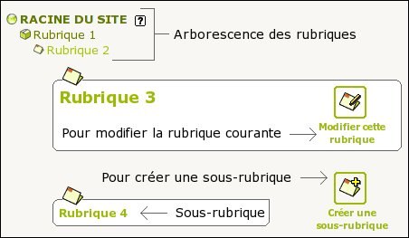
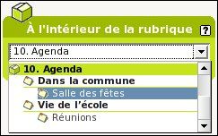

- Entrez dans l'interface d'administration
- Allez dans :

- Naviguez dans l'arborescence, en descendant dans les rubriques jusqu'à
ce que vous arriviez dans la rubrique où vous souhaitez créer
votre sous-rubrique. Ou à la racine du site pour créer une rubrique.
 - Pour créer une (sous-) rubrique, cliquez sur :
- Dans la page d'édition de la rubrique remplissez le titre (éventuellement le descriptif et/ou le texte explicatif)
- Si vous vous êtes trompé de niveau, vous pouvez directement
mettre votre rubrique dans une autre, avec :
 Sélectionnez la rubrique dans laquelle vous voulez placer votre rubrique (ou racine du site). C'est aussi par ce même procédé que l'on peut déplacer (plus tard) une rubrique avec tout ce qu'elle contient (sous-rubrique, articles, ...)
- Lorsque votre rubrique est saisie, cliquez sur [Valider] (en bas de page)
Si une rubrique est "vide" (ne contient aucun article
ou site référencé) elle n'apparaîtra pas dans le site.